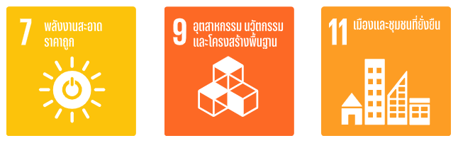
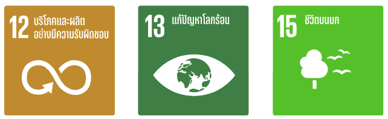
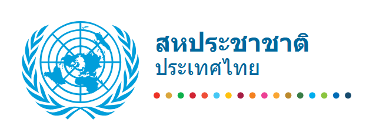

องค์กรของสหประชาชาติที่มีส่วนร่วมในโครงการนี้
ยูเอ็น สหประชาชาติ
ร่วมคิด ร่วมทำ สู่ความยั่งยืนเพื่อโลกของเรา—วิถีชีวิตของเราส่งผลกระทบอย่างมากต่อโลก การตัดสินใจของเราจึงมีความสำคัญ ราว 2 ใน 3 ของการปล่อยก๊าซเรือนกระจกทั่วโลกมาจากภาคครัวเรือนหรือระดับบุคคล และภาคพลังงาน อาหาร และการขนส่งซึ่งเป็นปัจจัยสำคัญในชีวิตของเราต่างก็มีส่วนปล่อยมลพิษประมาณร้อยละ 20 ด้วยเหตุนี้ เราทุกคนจึงสามารถสร้างความแตกต่างได้ ตั้งแต่ไฟฟ้าที่เราใช้ อาหารที่เรารับประทาน ไปจนถึงวิธีการที่เราเดินทาง ลองเริ่มต้นด้วย 10 วิธีดังต่อไปนี้ หรือดาวน์โหลดแอปเพื่อดูข้อมูลเพิ่มเติมพร้อมบันทึกการมีส่วนร่วมของคุณได้เลย
การผลิตไฟฟ้าและความร้อนส่วนใหญ่ใช้พลังงานจากถ่านหิน น้ำมัน และก๊าซ เราสามารถใช้พลังงานให้น้อยลงได้โดยการปรับระดับการทำความร้อนและความเย็นให้ต่ำลง เปลี่ยนมาใช้หลอดไฟ LED และเครื่องใช้ไฟฟ้าประหยัดพลังงาน ซักผ้าด้วยน้ำเย็น หรือตากผ้าแทนการใช้เครื่องอบผ้า
ถนนทั่วโลกแน่นขนัดไปด้วยยานพาหนะซึ่งส่วนใหญ่ใช้น้ำมันดีเซลหรือเบนซินเป็นเชื้อเพลิง การเดินหรือขี่จักรยานแทนการขับรถจะช่วยลดการปล่อยก๊าซเรือนกระจก ทั้งยังช่วยเสริมสร้างสุขภาพและความแข็งแรงอีกด้วย หากคุณต้องเดินทางไกล ลองเปลี่ยนมาโดยสารรถไฟหรือรถประจำทาง และติดรถไปกับผู้อื่นเมื่อทำได้
แค่รับประทานผัก ผลไม้ ธัญพืชเต็มเมล็ด พืชตระกูลถั่ว และเมล็ดพืชมากขึ้น และลดเนื้อสัตว์และผลิตภัณฑ์จากนมให้น้อยลง คุณก็สามารถลดผลกระทบต่อสิ่งแวดล้อมได้อย่างมาก โดยทั่วไปกระบวนการผลิตอาหารที่มาจากพืชจะสร้างก๊าซเรือนกระจกน้อยกว่า อีกทั้งยังใช้พลังงาน ที่ดิน และน้ำน้อยกว่า
เครื่องบินใช้เชื้อเพลิงฟอสซิลอย่างมหาศาล และปล่อยก๊าซเรือนกระจกจำนวนมาก การนั่งเครื่องบินให้น้อยลงจึงเป็นหนึ่งในวิธีที่เร็วที่สุดในการลดผลกระทบต่อสิ่งแวดล้อม หากทำได้ ให้คุณนัดพบกันในทางออนไลน์ ขึ้นรถไฟ หรือยกเลิกการเดินทางระยะไกลนั้นไปเลย
ทุกครั้งที่คุณทิ้งอาหาร คุณกำลังทิ้งทรัพยากรและพลังงานที่ใช้ในการเพาะปลูก/เลี้ยง ผลิต บรรจุ และขนส่งอาหารนั้น ๆ และอาหารที่บูดเน่าอยู่ในบ่อขยะก็จะปล่อยก๊าซมีเทนซึ่งเป็นก๊าซเรือนกระจกที่รุนแรงมาก ดังนั้น รับประทานอาหารที่คุณซื้อมาให้หมดและส่วนที่เหลือให้หมักทำปุ๋ย
อุปกรณ์ไฟฟ้า เสื้อผ้า และสินค้าอื่น ๆ ที่เราซื้อล้วนแล้วแต่ก่อให้เกิดการปล่อยคาร์บอนไดออกไซด์ ณ จุดใดจุดหนึ่งของการผลิต ตั้งแต่การหาวัตถุดิบ ไปจนถึงการผลิต และการขนส่งสินค้าสู่ตลาด คุณสามารถช่วยรักษาสภาพอากาศของเราด้วยการซื้อของให้น้อยลง ซื้อของมือสอง ซ่อมหากซ่อมได้ และรีไซเคิล
สอบถามบริษัทสาธารณูปโภคของคุณว่าพลังงานที่คุณใช้ในบ้านนั้นผลิตมาจากน้ำมัน ถ่านหิน หรือก๊าซหรือไม่ ถ้าเป็นไปได้ ให้ลองเปลี่ยนไปใช้แหล่งพลังงานหมุนเวียน เช่น ลมหรือพลังงานแสงอาทิตย์ หรือติดตั้งแผงโซลาร์เซลล์บนหลังคาเพื่อผลิตพลังงานให้บ้านของคุณ
หากคุณวางแผนที่จะซื้อรถยนต์ ลองเลือกดูรถยนต์ไฟฟ้าซึ่งตอนนี้มีหลายรุ่นและราคาถูกลง แม้ว่าไฟฟ้าที่ใช้จะยังผลิตมาจากเชื้อเพลิงฟอสซิลอยู่ แต่รถยนต์ไฟฟ้าก็ช่วยลดมลพิษทางอากาศและปล่อยก๊าซเรือนกระจกน้อยกว่ารถยนต์ที่ใช้แก๊สหรือดีเซลอย่างมีนัยสำคัญ
ทุกการใช้จ่ายของเราส่งผลกระทบต่อโลกทั้งสิ้น คุณมีอำนาจว่าจะเลือกสนับสนุนสินค้าและบริการใดเพื่อลดผลกระทบต่อสิ่งแวดล้อม ให้คุณซื้ออาหารตามฤดูกาลที่ผลิตในท้องถิ่น เลือกผลิตภัณฑ์จากบริษัทที่ใช้ทรัพยากรอย่างมีความรับผิดชอบและมุ่งมั่นที่จะลดการปล่อยก๊าซเรือนกระจกและของเสีย
เปล่งเสียงของคุณและชักชวนผู้อื่นให้ร่วมลงมือด้วยกัน นี่เป็นหนึ่งในวิธีที่รวดเร็วและมีประสิทธิภาพที่สุดในการสร้างการเปลี่ยนแปลง ชักชวนเพื่อนบ้าน เพื่อนร่วมงาน เพื่อน และครอบครัวของคุณ บอกให้ธุรกิจต่าง ๆ รู้ว่าคุณต้องการเห็นการเปลี่ยนแปลงที่กล้าหาญและชัดเจน ตลอดจนเรียกร้องให้ผู้นำท้องถิ่นและระดับโลกดำเนินการในทันที



การพัฒนาที่ยั่งยืนไม่ใช่หน้าที่ของคนใดคนหนึ่ง แต่เป็นความร่วมมือของทุกคน ทั้งภาครัฐ ภาคเอกชน และประชาชน
กลับหน้าหลัก